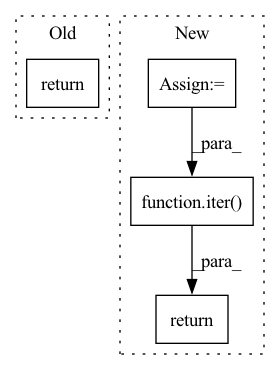

Pattern ID :29358

Before Change
cycle_length=ctx.data.interleaved_datasets,
num_parallel_calls=ctx.data.parallel_interleave)
return dset.shuffle(ctx.data.shuffle_buffer, seed=ctx.data.seed).batch(batch_size).map(_memory_func)
After Change
dset = tf.data.Dataset.from_tensor_slices(filenames).repeat()
sequence_length = ctx.dims.dim_sizes[ctx.dims.sequence]
batch_size = ctx.dims.dim_sizes[ctx.dims.batch]
device_steps = ctx.device_steps
def _slice_target(x):
x = tf.cast(tf.reshape(x, (device_steps, batch_size, sequence_length + 1)), tf.int32)
return tf.stack([x[:, :sequence_length], x[:, 1:]], 1)
dset = dset.interleave(lambda x: decoder("int64" in filenames[0], x, sequence_length),
cycle_length=ctx.data.interleaved_datasets,
num_parallel_calls=ctx.data.parallel_interleave)
dset = dset.shuffle(ctx.data.shuffle_buffer, seed=ctx.data.seed).batch(device_steps * batch_size).map(_slice_target)
return iter(dset)
In pattern: SUPERPATTERN
Frequency: 4
Non-data size: 4
Instances
Fragment ID: 86181719
Project Name: homebrewnlp/homebrewnlp-jax
Commit Name: b17ef9a511b73fdcba376399d485e0d0882f60d1
Time: 2021-07-20
Author: 39779310+ClashLuke@users.noreply.github.com
File Name: data.py
M Class Name: AnonimousClass
N Class Name: AnonimousClass
M Method Name: text_dataset(1)
N Method Name: text_dataset(1)
M Parent Class:
N Parent Class:
M File Name: data.py
N File Name: data.py
M Start Line: 38
M End Line: 48
N Start Line: 40
N End Line: 51
'>
Before Change
for kk in ind_indexes:
ret.append(index[kk])
return iter(ret)
class CombineDataset(Dataset[T_co]):
After Change
return [i for i, element in enumerate(element_list) if element != target_element]
pid_idxes = torch.randperm(len(self.pid_list)).tolist()
final_idxes = []
for perm_id in pid_idxes:
i = random.choice(self.idx_list_per_pid[self.pid_list[perm_id]])
_, _, cid = self.dataset[i]
final_idxes.append(i)
pid_i = self.idx_to_pid[i]
cid_list = self.cid_list_per_pid[pid_i]
idx_list = self.idx_list_per_pid[pid_i]
selected_cid_list = select_idxes(cid_list, cid)
if selected_cid_list:
if len(selected_cid_list) >= self.num_instances:
cid_idxes = np.random.choice(selected_cid_list, size=self.num_instances - 1, replace=False)
else:
cid_idxes = np.random.choice(selected_cid_list, size=self.num_instances - 1, replace=True)
for cid_idx in cid_idxes:
final_idxes.append(idx_list[cid_idx])
else:
selected_idxes = select_idxes(idx_list, i)
if not selected_idxes:
continue
if len(selected_idxes) >= self.num_instances:
pid_idxes = np.random.choice(selected_idxes, size=self.num_instances - 1, replace=False)
else:
pid_idxes = np.random.choice(selected_idxes, size=self.num_instances - 1, replace=True)
for pid_idx in pid_idxes:
final_idxes.append(idx_list[pid_idx])
return iter(final_idxes)
class CombineDataset(Dataset[T_co]):
rDataset as a combination of multiple datasets.
'>
Fragment ID: 86181723
Project Name: thuml/transfer-learning-library
Commit Name: 4ac973e99e5361a6a5be0a5e9915b81e0a2e24bb
Time: 2021-08-29
Author: chenbx18@mails.tsinghua.edu.cn
File Name: common/utils/data.py
M Class Name: RandomMultipleGallerySampler
N Class Name: RandomMultipleGallerySampler
M Method Name: __iter__(1)
N Method Name: __iter__(1)
M Parent Class: Sampler
N Parent Class: Sampler
M File Name: common/utils/data.py
N File Name: common/utils/data.py
M Start Line: 88
M End Line: 123
N Start Line: 102
N End Line: 134
'>
Before Change
return len(cls.__universal_registry)
def __iter__(cls) -> _typing.Iterator[str]:
return iter(cls.__universal_registry)
@property
def _universal_registry(cls) -> _typing.Mapping[str, _typing.Any]:
After Change
return False
def __iter__(cls) -> _typing.Iterator[str]:
results: _typing.MutableSequence[str] = []
for __identifier, (_, names) in cls.__universal_registry.items():
results.extend(names)
return iter(results)
def __new__(
mcs, name: str, bases: _typing.Tuple[type, ...],
namespace: _typing.Dict[str, _typing.Any]
'>
Fragment ID: 86181726
Project Name: thumnlab/autogl
Commit Name: 047895d524eb9d9566701d52591fcd02611fe187
Time: 2021-12-30
Author: core-leader@outlook.com
File Name: autogl/utils/universal_registry.py
M Class Name: _UniversalRegistryMetaclass
N Class Name: _UniversalRegistryMetaclass
M Method Name: __iter__(1)
N Method Name: __iter__(1)
M Parent Class: type
N Parent Class: type
M File Name: autogl/utils/universal_registry.py
N File Name: autogl/utils/universal_registry.py
M Start Line: 18
M End Line: 18
N Start Line: 52
N End Line: 55